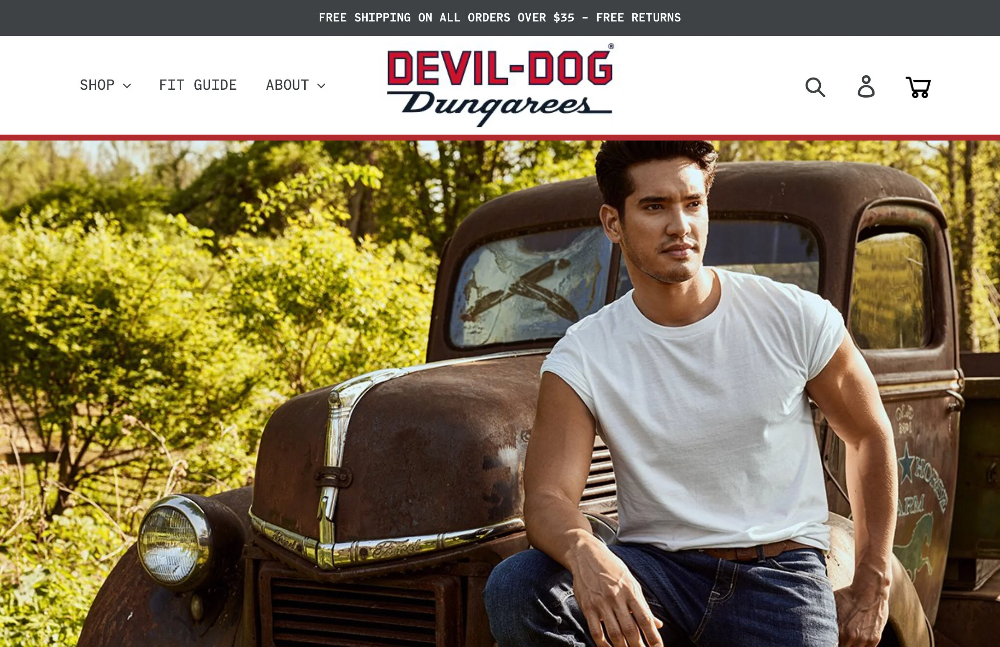

AddressC:\My Documents
6 object(s)
Hi, I’m Stephanie.
Creative producer, strategist, photographer, and experiential marketing leader based in New York City.
I combine an artistic background from Parsons School of Design with more than a decade of experience across live events, educational programming, video production, commercial imaging, and brand partnerships.
I develop ideas, build the teams and systems that make them real, and lead projects from early concept through final execution. My work is grounded in collaboration, clarity, and memorable audience experiences.
Art practice
My photographic work explores the relationship between truth, simulation, reflection, and constructed imagery. By combining photographed, rendered, manipulated, and found visual material, I question photography’s traditional role as evidence.
📍 New York City🎓 Parsons School of Design🎬 Creative Production📷 Photography
AddressC:\Stephanie’s Work
PORTFOLIO
Explore Stephanie’s Work
Choose a discipline to explore projects spanning live experiences, creative production, commercial imaging, and photographic art.
4 portfolio categories
LIVE EXPERIENCES / EDUCATION / RETAIL
Experiential Marketing
Collaborative brand experiences that turn education, product discovery, and live programming into meaningful audience engagement.
EXPERIENTIAL MARKETING / RETAIL ACTIVATION
Lexar x AFA Soccer Fan Zone
Developed in close partnership with Lexar and the Argentina Football Association, this multi-zone retail experience translated the energy surrounding international soccer in New York City into an educational and participatory customer event.
The experience
I led the experiential direction and in-store execution while collaborating with Lexar on the broader concept. Together, we developed a program that combined an educational panel and discussion, a live photography demonstration, football freestyle performances, a look-alike contest, giveaways, and interactive activations throughout the store.
- Role
- Event Space Manager
- Partners
- Lexar and Argentina Football Association (AFA)
- What I led
- Experiential direction, collaborative concept development, educational programming, retail activation planning, cross-functional coordination, talent integration, and on-site execution
Experience gallery
EXPERIENTIAL MARKETING / EDUCATIONAL PROGRAMMING
Mother’s Day Magic on the High Line
Developed in partnership with Nikon, SanDisk, and the High Line, this Mother’s Day activation connected hands-on photography education with product discovery and an experiential journey through New York City.
150+ attendees participated in the program.
The experience
Led by photographer Tina Sokolovska, the workshop began in the retail environment, where participants received guidance, borrowed Nikon equipment, and connected with brand and gear experts. The group then moved to the High Line for a live photography workshop featuring two models before returning to the store for additional product engagement, SanDisk activations, giveaways, and ice cream.
- Role
- Event Space Manager
- Partners
- Nikon, SanDisk, and the High Line
- Instructor
- Tina Sokolovska
- What I led
- Collaborative concept development, experiential and educational programming, partner coordination, instructor and live-shoot integration, the retail-to-High-Line audience journey, product discovery, and on-site production
Experience gallery
EXPERIENTIAL MARKETING / INTEGRATED RETAIL ACTIVATION
Canon Day at B&H
Produced in partnership with Canon and cross-functional B&H teams, Canon Day transformed the SuperStore into a connected brand experience spanning hands-on product discovery, education, service, retail promotion, and digital content.
The experience
The full-day activation invited customers to explore Canon’s camera, lens, cinema, and printing ecosystem through live demonstrations, a Touch & Try experience, complimentary Canon camera and lens cleaning, expert support, special in-store offers, and three educational sessions. The program was supported by coordinated web, social, print, and in-store promotion, while recorded sessions and short-form content extended the experience beyond the retail audience.
- Role
- Event Space Manager
- Partner
- Canon
- What I led
- Collaborative concept development, event production, educational programming, cross-department coordination, talent and presenter integration, retail activation planning, production capture, and digital extension
- Format
- Full-store product experience, three live classes, service activation, special offers, recorded education, and social content
Program highlights
01
Why I’m Crushing on the Canon EOS C50
Travel filmmaker Juliana “TravelingJules” Broste shared a field-tested look at the EOS C50.
02
Touch & Try the Canon Ecosystem
Customers explored cameras, cinema gear, lenses, and printers with personalized support from Canon representatives.
03
Finding Excellence in Unexpected Places
Alex Geiger and Paul Seibert demonstrated the EOS R6 Mark III in fast-paced, low-light storytelling environments.
04
Leveling Up Your Art & Your Gear
Marina Williams connected creative direction, color, styling, and portrait technique with the EOS R6 Mark III.
Experience gallery
Educational content
The live program was recorded and published online, extending the educational value beyond the in-store audience.
▶︎ Canon Day Education
▶︎ Canon Day Education
▶︎ Canon Day Education
▶︎ Canon Day Education
SELECTED WORK
Creative Production
Product launches and brand campaigns developed from concept through execution.
PRODUCT LAUNCH / VIDEO
Nikon Z 9
Partnered with Nikon to develop the concept and production plan for a hands-on launch film introducing its flagship mirrorless camera.
- Role
- Executive Producer & Creative Director
- Owned
- Concept development, brand partnership, production planning, creative direction, and execution oversight
▶︎ ▌▌ ■ 03:42
PRODUCT LAUNCH / VIDEO / PHOTOGRAPHY
Sony APS-C Lenses
Worked directly with Sony to develop a launch concept for three new wide-angle APS-C lenses. I also photographed still imagery featured throughout the final film.
- Role
- Executive Producer, Creative Director & Photographer
- Owned
- Launch strategy, concept development, production planning, brand collaboration, and photography
▶︎ ▌▌ ■ 04:18
INDEPENDENT CLIENT PROJECT
FUJIFILM Campaign
Produced the full project independently and collaborated with the featured photographer to shape the creative concept.
- Role
- Producer
- Owned
- Full production, concept collaboration, scheduling, logistics, and project management
▶︎ ▌▌ ■ Vimeo
INDEPENDENT BRAND CAMPAIGN
Devil-Dog Dungarees
Developed the mood board and creative direction, coordinated talent, and produced the campaign from planning through final delivery.
- Role
- Producer & Creative Strategist
- Owned
- Mood boards, concept development, talent coordination, production logistics, campaign execution, and ecommerce implementation support

Campaign films
▶︎ Vimeo Brand Film
▶︎ YouTube Campaign Film
Campaign gallery
This uploaded Version 1 folder contained one Devil-Dog image. The gallery is wired so additional images can be dropped in later without changing the overall design.
PRINT / DIGITAL / ECOMMERCE
Commercial Eyewear Photography & Retouching
Product photography, high-end retouching, color correction, magazine collaboration, ecommerce imaging, and print-ready production.
Credit note: Product-only imagery includes my photography and retouching. For model and children’s campaigns, my contribution focused on retouching and print preparation.
SELECTED PERSONAL PHOTOGRAPHY
Art Practice
My work explores the space between observation and construction—using reflections, shadows, architecture, and shifting points of view to question how a photograph describes reality.
01
Reflections
Layered spaces where glass, interiors, architecture, and reflected streets collapse into a single frame.
02
Light, Architecture & Place
Photographs shaped by geometry, dramatic light, movement, and the built environment.
Stephanie Gross
Experiential Marketing & Events Leader
Creative strategy, brand activations, educational programming, video production, commercial imaging, and cross-functional team leadership.
LET’S CONNECT
Let’s make something meaningful.
For creative production, experiential marketing, photography, partnerships, or something unexpected, contact me directly here.
EmailStephanieGinaG@gmail.com
LinkedInlinkedin.com/in/stephgrossOpen LinkedIn ↗
Instagram@yungstephieOpen Instagram ↗
📍 New York, New York
For Help, click Help Topics on the Help Menu.
Clear the field without touching a mine.
Now why did you click this?!
The Recycle Bin is empty. Stephanie has never had a bad idea.